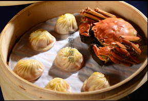

金秋十月，蟹肥膏美，在饕客们的时间表上，就意味着一年一度的蟹宴完美登场。有食家言：“秋天以吃螃蟹为最隆重之事”。大闸蟹只需清蒸便可保留了蟹的原汁原味，沾上姜醋，细品蟹肉的白嫩丰腴，蟹黄的鲜香细腻，蟹膏的厚实香醇。这是餐桌上最简单的食材，也是最有想象力的食材，经过煎炒烹炸，每一种做法都给人带来惊喜。在各地肥蟹纷纷登场之际，跟着搜狐美食一起去品尝下各地店家的金秋蟹宴吧。
 地址：王府井大街301号东华金街购物中心6层，北京及上海各连锁店.蟹粉狮子头是江苏扬州地区汉族传统名菜，属于淮扬菜系。口感松软，肥而不腻，营养丰富。红烧，清蒸，脍炙人口。主要原料是蟹肉和用猪肉斩成细末做成的肉丸，(扬州人俗称“斩肉”)。该店除了蟹粉狮子头，蛋羹秃黄油、 蟹糊布丁、 冰激凌蟹均是特色蟹宴佳肴。鼎泰丰由蟹粉小笼包而闻名遐迩。唐老先生在《联合早报》两次赞美鼎泰丰的蟹粉小笼包“无意中发现信义路口有家专门卖点心的鼎泰丰，他家的蟹粉汤包（蟹粉小笼包），蟹七肉三，毫不偷工减料……鹅黄溶浆，汤腴味正，比那些在包子缩口上掺一点咖喱，楞充蟹黄着完全两样……”蟹粉小笼包可说是小笼包中的极品，外皮均匀、内馅实在，轻轻咀嚼品尝，汤汁四溢，鲜美的滋味令人口齿留香，搭配着姜丝蘸醋，衬出了蟹粉独特的味道。该店除了蟹粉小笼包，蟹柳炒芦笋、蟹粉豆腐煲也是特色菜。
作者：梁倪妮
Copyright ? 2016 Sohu.com Inc. All Rights Reserved. 搜狐公司 版权所有 全部新闻 全部博文